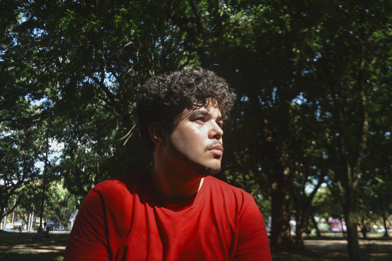

Fotógrafo & Comunicador Visual
3 anos cobrindo eventos e produzindo conteúdo para empresas em Porto Alegre.
Porto Alegre/RS · Disponível para PJ e projetos freelance

Quem sou
Tenho um perfil naturalmente múltiplo: a base técnica em informática, o pensamento centrado no usuário em UX e a prática em vídeo e design não são habilidades isoladas, são camadas que se somam.
Isso me permite entrar em qualquer projeto de comunicação com uma visão mais ampla do que só a execução. Gosto de entender o contexto da empresa e o cenário do setor antes de criar qualquer coisa, porque acredito que o trabalho só é bom quando está conectado com o que a marca realmente precisa.
Atualmente em Porto Alegre/RS, atuando como Social Media na AVANT Energia e disponível para projetos freelance de edição de vídeo, design, fotografia e estratégia de conteúdo.
Trajetória
Empresa gaúcha fundada em 2016, especialista em energia por assinatura para empresas no Sul do Brasil. Conecta empresas a fontes de energia limpa de forma 100% digital, sem obras e sem investimentos, gerando economia real na conta de luz.
Trabalhos selecionados
Ferramentas e competências
Vamos conversar
Estou em busca de um ambiente onde comunicação, criatividade e estratégia se encontrem. Se você precisa de alguém que entende o briefing antes de abrir qualquer software, com autonomia e visão de negócio, vamos conversar.